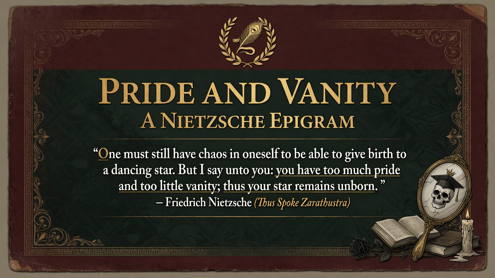

Section 112: The Noisy Believer
Part Four: Epigrams and Interludes • Beyond Good and Evil
"To him who feels himself preordained to contemplation and not to belief, all believers are too noisy and obtrusive; he guards against them."
The contemplative type experiences the fervor, certainty, and proselytizing energy of believers as disruptive noise. Belief demands attention and assent in ways that clash with the quiet, receptive, skeptical stance of genuine contemplation. The free spirit or philosopher of the future guards his solitude against the clamor of the faithful of any stripe—religious, political, moral.
Implication: Contemplation requires distance from the emotional volume of belief. The thinker protects the conditions of clear seeing by limiting exposure to the "noisy."
Modern companion insight: In an age of viral convictions, outrage cycles, and activist certainty on all sides, the epigram validates the need for intellectual quiet and guarded attention. Not all noise is insight; much is obtrusion. The contemplative spirit selects what enters the inner chamber. ~180 words.
